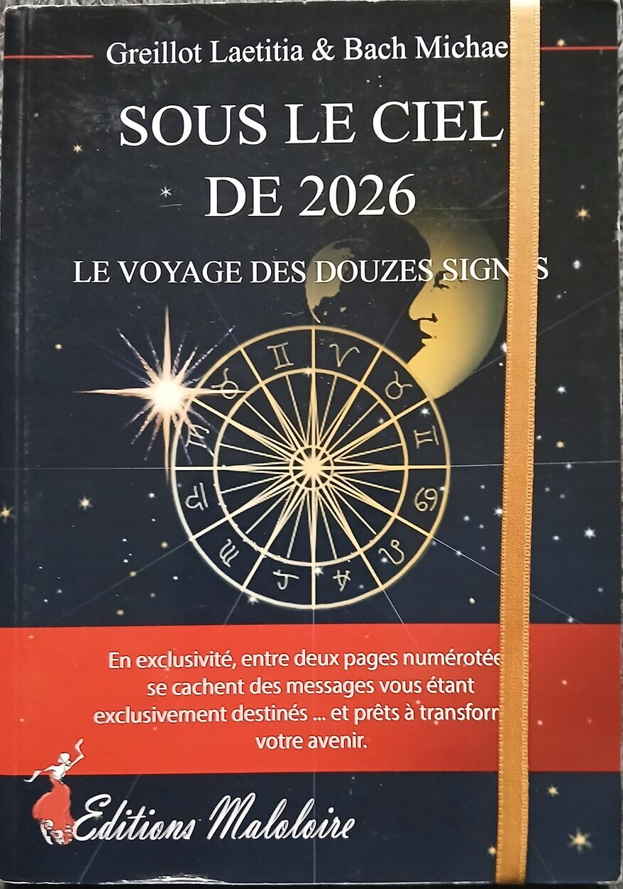
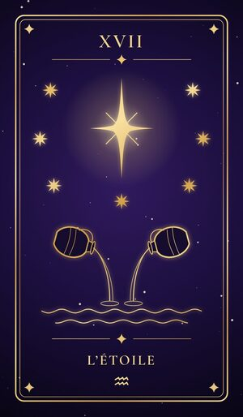
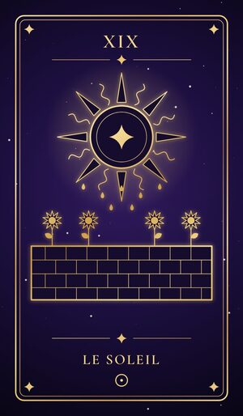
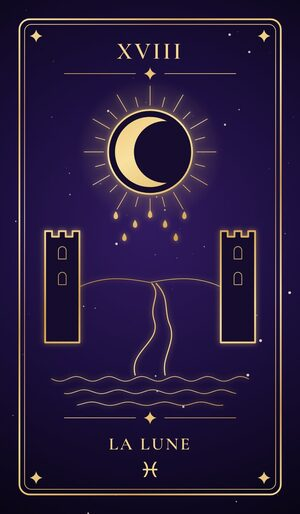
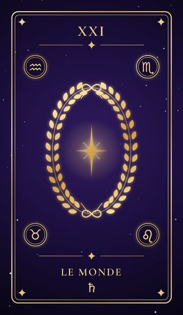
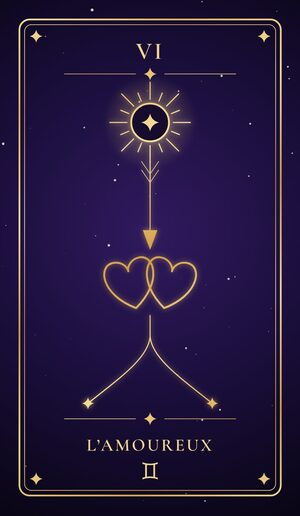
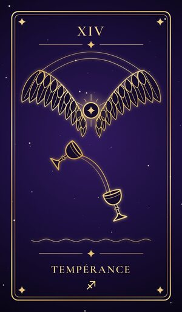
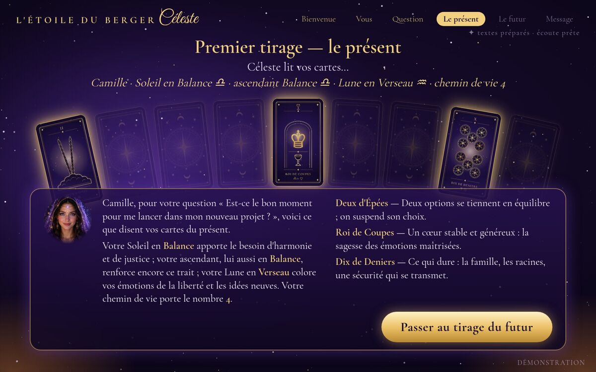

Laissez la lumière vous guider
L’Étoile du BergerCéleste
Voyance par une intelligence artificielle d’astrologie, sur place, au pupitre de Céleste
Je m’appelle Céleste
« Je ne suis pas un robot comme les autres : je suis une intelligence artificielle conçue pour une seule chose, lire les astres et les cartes pour éclairer votre chemin. »
Avec votre date de naissance, et si vous les connaissez votre heure et votre ville de naissance, Céleste calcule votre signe, votre ascendant et votre Lune. Elle écoute votre question, puis fait deux tirages : le présent, qui répond à votre question, et le futur, ce qui se dessine pour vous.
Céleste est une intelligence artificielle : ses lectures sont des pistes pour réfléchir, jamais des certitudes. Elle ne parle ni de santé, ni d’argent, ni de justice, et c’est toujours vous qui choisissez vos pas.
Née d’un livre

« Je suis née du travail de Laetitia Greillot et de Michael Bach, les auteurs du livre Sous le ciel de 2026. Ce que je vous dis ne vient pas de nulle part. »
Laetitia Greillot et Michael Bach sont les créateurs de L’Étoile du Berger Céleste : le pupitre, la voyance et Céleste elle-même. Ils sont les auteurs de « Sous le ciel de 2026 — Le voyage des douze signes », paru aux éditions Maloloire.
Les lectures de Céleste reposent sur ce travail : les douze signes, leurs saisons, et le langage des cartes.
Au pupitre : comment ça marche
- Vous payez sans contact : carte, téléphone ou montre. La lumière s’allume sur vous.
- Céleste vous accueille et fait connaissance : prénom, date, heure et ville de naissance.
- Vous lui posez votre question, à voix haute ou par écrit.
- Deux tirages : vous touchez trois cartes pour votre présent, puis trois pour votre avenir.
- Céleste vous confie son message et un conseil. Si vous le souhaitez, elle se souvient de vous pour la prochaine fois.
Un jeu de 78 cartes






Dessinées pour la cabine, en traits d’or sur violet nuit : les noms du Tarot de Marseille et le ciel de chaque carte, ses planètes et ses signes.
Dans la cabine

Où trouver le pupitre
Le pupitre de Céleste vous attend dans la pièce du fond de l’espace distributeur automatique, ouvert jour et nuit.
Itinéraire
Le pupitre vous accueille sur place. Pour retrouver Céleste sur votre appareil, ouvrez l’application en ligne ou téléchargez sa version Android.